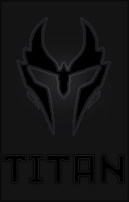

|  |
TitanMă numesc Băroi Nicu Alexandru, am 18 ani, locuiesc în București și sunt pasionat de domeniul tehnic Metin2 atât cât și de programare și IT în general. |
| Proiecte realizate: | Proiecte viitoare: |
|---|---|
| DreamsWorld - Server PvP | Serverfiles-ul clean va fi refăcut |
| AzoraWorld2 - Server PvM | Voi face un site unde voi realiza o descriere completa a clean-ului |
| Stați aproape, v-a urma |
| C++ | ⭐ |
| Lua | ⭐ |
| Python | ⭐ |